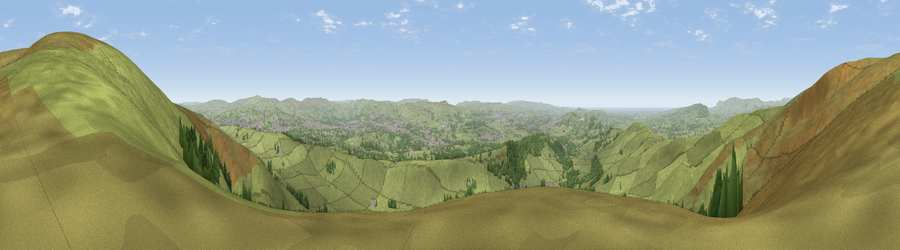

Viewpoint near Sabden
#5289 in England · top 6% of its area beats it · near SabdenThe view, rendered

A 360° render of this exact spot computed from the terrain model, tree cover and land cover — summer colours, afternoon light, calibrated against photographs of famous viewpoints. Real trees, hedges and buildings will differ in detail.
The panorama
Grey silhouette: terrain skyline in each direction (720 bearings, Earth curvature and refraction included). Dashed green: skyline with trees (+15 m) and buildings (+8 m) as obstacles. Blue strip: how far the ground is visible on each bearing.
Where the view opens
Wedge length = distance to the farthest visible ground on that bearing (vegetation-aware). Rings at 10, 25 and 50 km.
What fills the view
82% grassland · 13% woodland · 4% built-up · 2% water
Angular shares of the visible panorama (visual magnitude), not map area. Landscape diversity 0.27 (0–1 Shannon).
Key numbers
More beautiful places nearby
The staircase of upgrades: each row has a higher view potential than everything closer. Driving times are estimates from straight-line distance, calibrated against real road routing — check an actual route before setting out.
| Place | Direction | Drive | Score |
|---|---|---|---|
| Viewpoint near Sabden | NE · 1 km | ~2 min | 70.9 |
| Viewpoint near Pendleton | NW · 2 km | ~5 min | 72.1 |
| Pendle Hill | NNE · 3 km | ~7 min | 76.5 |
| Viewpoint near Edenfield | S · 20 km | ~34 min | 77.5 |
| Darwen Hill | SSW · 20 km | ~34 min | 80.7 |
| Rivington Pike | SSW · 29 km | ~46 min | 81.9 |
| White Brow | SSW · 29 km | ~46 min | 82.9 |
| Warton Crag | NW · 45 km | ~66 min | 83.2 |
53.84434, -2.32027 · source: screening · position refined by local search. Computed location — check access rights before visiting.